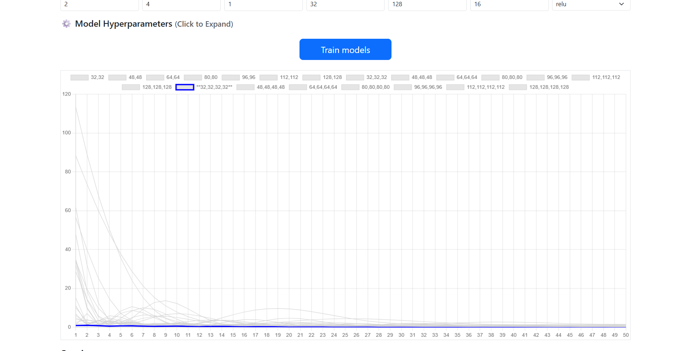

Overview
Semiconductor fabrication involves tightly controlled process steps — each with time, temperature, and chemical concentration parameters that determine the final device characteristics. This web application provides a browser-based interface for modeling two fabrication processes: proton exchange (PE) in lithium niobate waveguide fabrication, and thermal oxidation of silicon.
The tool was designed to sit at a process station: a process engineer opens it in a browser, enters or uploads process parameters, and receives immediately plotted results showing how the waveguide refractive index depth profile or oxide thickness evolves under the given recipe. For live process runs, it can connect to a serial temperature sensor and update the output in real time as the furnace heats.
Processes Modeled
Proton Exchange (PE) — LiNbO₃ Waveguides
In proton exchange, LiNbO₃ (lithium niobate) is immersed in a proton source (typically benzoic acid) at elevated temperature. Hydrogen ions (H⁺) replace Li⁺ ions in the crystal lattice, locally increasing the extraordinary refractive index and forming a waveguide.
The refractive index depth profile follows a diffusion model. The diffusion equation for the H⁺ concentration c(z, t) under constant surface boundary condition c(0,t) = c_s:
where D(T) = D₀·exp(−E_a / k_B T) is the diffusion coefficient (Arrhenius temperature dependence), t is the exchange time, and z is the depth. The resulting refractive index change Δn_e ∝ c(z,t). The app plots Δn_e(z) for user-supplied temperature T and time t, and computes the mode depth (1/e field penetration) for comparison against target waveguide specifications.
Thermal Oxidation of Silicon
Thermal oxidation grows SiO₂ on a silicon wafer by exposing it to O₂ or H₂O at 800–1200 °C. The oxide thickness x_ox(t) follows the Deal-Grove model:
where A and B are temperature-dependent parabolic and linear rate constants, and τ accounts for initial oxide already present. The linear rate (B/A) dominates for thin oxides; the parabolic rate (B) dominates for thick oxides as diffusion through the growing oxide limits the reaction. The app plots x_ox vs. t for specified temperature and atmosphere (dry O₂ or wet H₂O), overlaying the linear and parabolic regime boundaries.
Architecture
Screenshots

